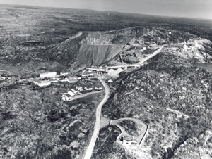

Home • Hydroelectric Power • Pulp & Paper • Transportation • Mining • Forestry • Algoma Steel • Algoma Tubes
Mining in Algoma
In 1898 Ben Boyer and Jim Sayers were prospecting for gold in the Michipicoten area when they staked what they thought was a promising gold claim. The sample proved to be hematite ore, and Clergue purchased the claim from Ben Boyer for $500. Clergue sold the mind to the Lake Superior Power Company and named it the Helen Mine, in honour of one of his sisters. The Helen Mine proved to be a rich deposit of hematite ore and would be in continuous production for 100 years except for a brief period from 1922-1938. At first the ore was mined by hand from surface outcrops, but in 1902 Lake Boyer was drained and underground mining began at the site. Underground iron mines are rare and the mines at Wawa were the first and last of this type to be operated in Canada. Over 140,000,000 tons of ore would be mined before the closure of the mines in 1998.
Although the first shipment of ore in 1900 went to blast furnaces in Midland, Clergue used the discovery of this mineral resource to develop a series of industries that became part of his industrial complex in Sault Ste. Marie. The Algoma Steel Company was incorporated on May 10, 1901 and the first rail was rolled on May 3, 1902. This was the first steel made in Ontario and the first rail rolled in Canada.
|
Open Pit Mining, Wawa Ontario |
Undergound Mining, Wawa Ontario |
Other mines connected to the Clergue industries would be opened in the following years. The Josephine Mine, named after another of Clergue's sisters and was located approximately ten (10) miles north of the Helen Mine, produced a high grade Bessemer-quality iron ore. The Frances, Goudreau Lake and McDougall sites were all prospective mine sites but none of the three (3) was developed during the Clergue years. Through a series of paper transfers, the Lake Superior Power Company transferred ownership of the Helen Mine to the Algoma Commerial Company.
In additon to the iron ore sites, Clergue and his investors also owned and operated gold and nickel properties. The Emily Mine at Missinabi and the Grace Mine at Michipicoten were the most important gold sites. The Grace Gold Mine operated from July of 1901 until the end of 1903, generating profits that ranged from $1,500 per month to $1,800 per month. The Grace Gold Mine was sold to the Lake Superior Corporation in 1908 for approximately $70,000 despite the fact that it was well known in mining circles that the Grace had a limited lode. The Grace was sold again in 1910, this time to the LaPage Gold Mining Company.
The Gertrude and Elsie Mines near Sudbury were acquired in 1808 on behalf of the Lake Superior Power Company to provide the nickel, which was needed to produce ferro-nickel. The by-products of the nickel roasting process were used to bleach the pulp produced at the pulp mill. In order to transport the nickel from Sudbury to Sault Ste. Marie, Clergue acquired the Manitoulin and North Shore Railway Company. The mines in the Sudbury area were sold to J.J. McFadden in 1912.
The mining interests of the Clergue industries extended to the United States. In 1902 Clergue acquired the Woodbridge Iron Mine in Minnesota. The Fiborn Limestone Company was incorporated in Michigan in 1909 and the Cannelton Coal and Coke Company of West Virginia in 1910.
Picture of Cannelton Coal Company, 1938 |
Eagle's Nest, Residence of Sir James Dunn in Wawa, Ontario |

In 1912 with the formation of the Algoma Steel Corporation all the mining properties were transferred to the new company where they operated under the company's Mines Department. In 1934 Sir James Dunn gained control of Algoma Steel and introduced his plan to develop iron ore mines in the Michipicoten Range. Sir James Dunn then incorporated Algoma Ore Properties Ltd. in 1936 and transferred all Algoma Steel's mining claims to the new company. Algoma Ore Properties Ltd. was empowered to undertake the mining and ore processing for Algoma Steel.
 Aerial view of Helen Mine, 1951 |
Jamestown, Wawa |
Aerial Tramway |
Sinter Plant, 1966 |

The Helen Mine had ceased operation in 1921 and since then there had been no iron mines operating in Canada. When the Helen Mine reopened in 1939 it produced siderite ore, which contains only about 25% iron. This ore was not considered of much value until a new process called sintering was developed. Sintering improved the iron content in the ore to about 51%. The Helen Mine reopened using the open pit method of mining. The ore was then transported by an aerieal tramway to the Sinering Plant. In 1949 underground mining was once again introduced at the Helen Mine. In 1945 the Victoria open pit mine was brought into production and in 1960 the underground George W. Macleod Mine was put into operation.
Following the death of Sir James Dunn in 1956, Algoma Steel underwent reorganization. In 1960 the Algoma Ore Properties Ltd. was wound up and it became the Algoma Ore Division of the Algoma Steel Corporation. On December 10, 1997 the decision to close down Algoma Steel's mining operation in Michipicoten was made, and the mines were closed in June of 1998.